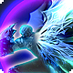

Inspiration noble
 Passif
Passif
Le Souverain dispose d'une réserve de dés d'inspiration utilisés pour activer ses aptitudes spéciales. Cette réserve commence à 4d4 et augmente avec le niveau. Il récupère jusqu'à la moitié de sa réserve maximale lors d'un repos court, et la totalité lors d’un repos long.
Ordre d'attaque
 2 PA (Action)
2 PA (Action)
Le Souverain inspire ses alliés à mettre plus d'efforts dans leurs attaques. En tant qu'action, consommez un dé d’Inspiration du Souverain ; lancez-le. Chaque allié volontaire qui peut entendre l'Ordre, jusqu'à un nombre égal au modificateur de Charisme du Souverain (minimum 1), ajoute ce nombre à son Offense pendant 3 rounds.
 Ordre de garde
2 PA (Action)
Ordre de garde
2 PA (Action)
Le Souverain donne un ordre défensif détaillé. En tant qu'action, consommez un dé d'inspiration ; lancez-le. Chaque allié volontaire qui peut entendre l'Ordre, jusqu'à un nombre égal au modificateur de Charisme du Souverain (minimum 1), réduit l'Offense de leurs ennemis de ce montant pendant 3 rounds.
Voile royal
 1 PA (Réaction)
1 PA (Réaction)
Un comportement posé permet au Souverain de réconforter les autres. Lorsqu'un allié subit des dégâts d'une attaque, le Souverain peut utiliser sa réaction pour consommer 1 dé d'Inspiration, le lancer, ajouter son modificateur de Sagesse et restaurer autant de points de vie à la cible ; si la cible aurait perdu connaissance à cause des dégâts subis, elle reçoit quand même un niveau d’épuisement.
Titre noble
 Spécialisation
Spécialisation
Le Souverain choisit un titre à suivre. Choisissez un titre, et ce titre accordera des aptitudes supplémentaires à mesure que le Souverain gagne en niveau. Les Magierkaisers exploitent les faiblesses de l'ennemi en modifiant les éléments des armements des alliés, puis en suivant avec leurs puissantes attaques magiques. Les Artzkaisers adoptent une approche plus nourricière, soutenant le groupe en les protégeant et en guérissant leurs blessures. Les Starkekaisers renoncent à une approche concentrée, préférant diriger par la seule force de leur personnalité, ce qui renforce la puissance de leurs ordres existants.
Négociation
 1 PA (Action Bonus)
1 PA (Action Bonus)
En tant qu'action bonus, le Souverain peut choisir d'échanger les effets de tous les Ordres d'attaque et de garde actuellement actifs, en conservant leur valeur d'origine. La durée des deux est réinitialisée à 3 rounds. Cela passe à 4 lorsque la Maîtrise des ordres est acquise.
Escrime de cour
1 PA (Action Combo)
Après avoir émis un Ordre, le Souverain peut utiliser une action combo pour adopter une posture de combat avec son arme de choix. Tant qu'il est dans cette posture, le Souverain peut attaquer une fois avec son arme équipée en tant qu'action libre. Cette attaque inflige des dégâts supplémentaires de force égaux à 1d6 + modificateur de Charisme.
Ordre de liaison I
1 PA (Réaction)
Lorsqu'une créature hostile dans un rayon de 30 mètres subit des dégâts de feu, de glace ou de foudre, le Souverain peut utiliser sa réaction pour infliger des dégâts de feu/glace/foudre égaux à 1d4 + son modificateur de Charisme à la cible en fonction de l'élément déclenchant la réaction.
Renforcement
Passif
Lorsqu'un allié reçoit un bonus du Souverain, il récupère des points de vie égaux à la moitié de la valeur numérique du bonus, arrondie à l'entier supérieur. Renforcement s'applique lorsque les Ordres ou les Armes sont d'abord émis, indépendamment des effets récurrents.
Lignée royale
Passif
Chaque fois que le Souverain dépenserait un dé d'Inspiration, si le résultat obtenu au lancer est la valeur maximale, le dé n’est pas consommé.
Maîtrise des ordres
Passif
Tous les ordres, sauf les Ordres de Liaison I et II, durent un tour supplémentaire.
Marche monarchique
Passif
Le Souverain reste vigilant en marchant, accordant un bonus de +2 aux tests de perception passive contre les ennemis cachés en dehors du combat. Si le Souverain repère un ennemi caché au début du combat, tous ses alliés le remarquent également.
Autorisation
2 PA (Action)
En tant qu'action, annulez les effets de tous les bonus du Souverain sur les créatures amicales, ainsi que tous les malus temporaires infligés par les capacités ou les sorts des créatures hostiles ; tous les alliés affectés récupèrent des points de vie égaux à la valeur absolue de tous les bonus et malus. L'effet de guérison de l’Autorisation échoue si au moins un bonus du Souverain n'est pas annulé.
À l'unisson !
Passif
Le groupe du Souverain reçoit un point d'Union supplémentaire au début du premier round.
Marque noble
Passif
La marque noble de la maison du Souverain apparaît sur le corps du Souverain. Pendant le repos court ou long, cette marque rassemble de l'énergie spirituelle et commence à briller faiblement ; la première aptitude utilisant des dés d'Inspiration après un repos court ou long obtient toujours le résultat maximal, et la lueur disparaît.
 Décret final
2 PA (Action)
Décret final
2 PA (Action)
En tant qu'action, dissipez tous les bonus sur le Souverain (au minimum 1) pour doubler les effets de tous les bonus appliqués par le Souverain jusqu'à la fin du round.

Chevalerie
2 PA (Action)
Après avoir terminé son parcours pour apprendre tous les fardeaux, responsabilités, forces et capacités d'un Souverain, le Souverain est enfin reconnu par la force mystérieuse qui protège sa noble maison, et obtient le droit de conférer la Chevalerie à un individu. En tant qu'action, le Souverain peut désigner une créature amicale et volontaire. Dans le prochain round de combat, cette créature agit en premier (ce qui prend le pas sur les autres effets qui font agir une créature en premier), inflige des dégâts supplémentaires de force égaux à 3d10 + modificateur de Charisme du Souverain (lancé à l'activation par le Souverain) lors de sa première instance de dégâts, est immunisée contre toutes les afflictions, et subit 1d12 + le modificateur de Constitution de cette créature de moins de dégâts lors de la première attaque reçue. Ses PA sont également fixés à 4 au début de son tour. La Chevalerie peut être accordée une fois par repos long.
 Détails de la classe
Détails de la classe
 Points de vie : 1d8 + modificateur de Constitution par niveau de Souverain
Points de vie : 1d8 + modificateur de Constitution par niveau de Souverain Jets de sauvegarde : Sagesse, Charisme
Jets de sauvegarde : Sagesse, Charisme Compétences : Choisissez 3 parmi Arcanes, Tromperie, Histoire, Intuition, Perception, Investigation, Médecine, Représentation, Persuasion, Religion
Compétences : Choisissez 3 parmi Arcanes, Tromperie, Histoire, Intuition, Perception, Investigation, Médecine, Représentation, Persuasion, Religion Équipement de départ : Une arme maîtrisée (ou deux si légères), un bouclier, une armure moyenne, un journal et un stylo à encre, un sac d'explorateur
Équipement de départ : Une arme maîtrisée (ou deux si légères), un bouclier, une armure moyenne, un journal et un stylo à encre, un sac d'explorateur